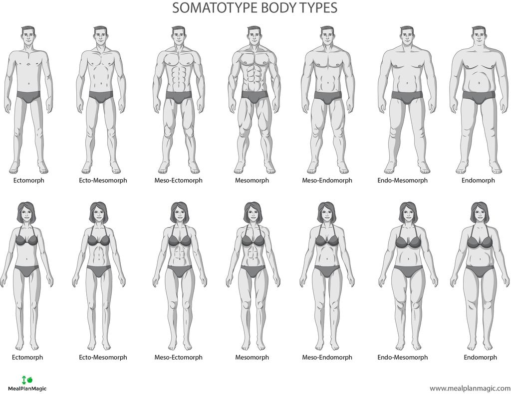

Having knowledge of your body type can greatly improve your training results by tailoring nutrition and training to your specific body-type.
For more information on body types, hover over buttons below.
Ectomorph:
Naturally thin with a skinny limbs and a delicate frame. Light build with small joints and lean muscle mass. Shoulders tend to be thin with little width and chest tends to be flat. Find it hard to gain weight and require more calories.
Recommended Workout: Short & intense focusing on big muscle groups.
Ecto-Mesomorph:
Built tall and lean with more muscle mass than an Ecto but less than a Meso.
Thin with a small delicate frame and bone structure.
Fast metabolism that burns up calories quickly.Medium shoulders with a flat and defined chest. Find it hard to gain weight and require more calories. Relatively fast metabolism that burns up calories quickly.
Recommended Workout: Short & intense focusing on big muscle groups.
Meso-Ectomorph:
Athletic physique, large-medium bone structure, and medium-large muscles. Rectangular shaped, hard body with well defined muscles. Gain muscle somewhat easily and responds well to weight training. Gain fat easier than ecto-mesomorphs so must watch calorie intake. Responds well to weight training and body building.
Recommended Workout: Weight training and cardio combination.
Mesomorph:
Naturally athletic physique, large bone structure and muscles.
Rectangular shaped, hard body with well defined muscles. Find it easy to gain muscle and lose weight easily. Gain fat easier than ectomorphs so must watch calorie intake. Respond well to weight training and body building.
Recommended Workout: Weight training and cardio combination.
Meso-Endomorph:
Athletic broad shoulders, large bone structure and large muscles.
Rectangular shaped, abdominal fat, somewhat defined muscles. Strong muscles that are great for powerlifting. Gain muscle quite easily. Gain fat easier than mesomorphs and must keep carbohydrate intake low. Responds best to weight training and cardio.
Recommended Workout: Weight training and cardio combination.
Endo-mesomorph:
Naturally solid and generally soft, slightly less abdominal fat than Endomorphs.
Round physique, relatively broad shoulders, stocky build, thick arms and legs. Strong muscles, especially legs. Relatively defined chest. Gain muscle and fat very easily. Medium to slow metabolism makes it easy to gain weight.
Recommended Workout: Cardio is a must in addition to weights.
Endomorph:
Naturally solid and generally soft.
Round physique. Short and stocky build, thick arms and legs. Strong muscles, especially legs. Gain muscle and fat very easily. Slow metabolism makes it easy to gain weight.
Recommended Workout: Cardio is a must in addition to weights.